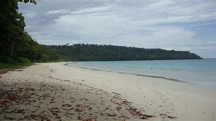

Radhanagar beach is everything you have dreamed of when you picture yourself having a perfect beach vacation. Vast expanses of unspoiled white sand, emerald blue waves with white foam necklaces gently caressing the shoreline, lush greens on the other horizon. It makes a perfect choice for honeymooners to nestle into one of the luxury resorts to spend time with each other in the lap of nature.
Also known as Beach no. 7, the beach offers beautiful sunrises and sunsets. Depending on your stay and schedule, this is one thing you simply shouldn’t miss.
Surprisingly, despite being extremely popular, you’ll find your quite corner as soon as you walk a little distance from the regular tourist crowd. You can simply watch the waves or take a quick dive.
In any case, it is difficult for most people to take their sights off the blue waves. You want to soak in the sight as much as possible during the time you spend there. So go off your camera and mobiles and simply enjoy the scenery.
When you are in a relatively happy place, don’t forget to get your souvenir photos on the beach.
Start planning your Radhanagar Beach and Andaman getaway now to reserve your own special spot at this wonderful beach.
Click on 'Book' button for fill up the details so that you cant visit this place for tour!!!